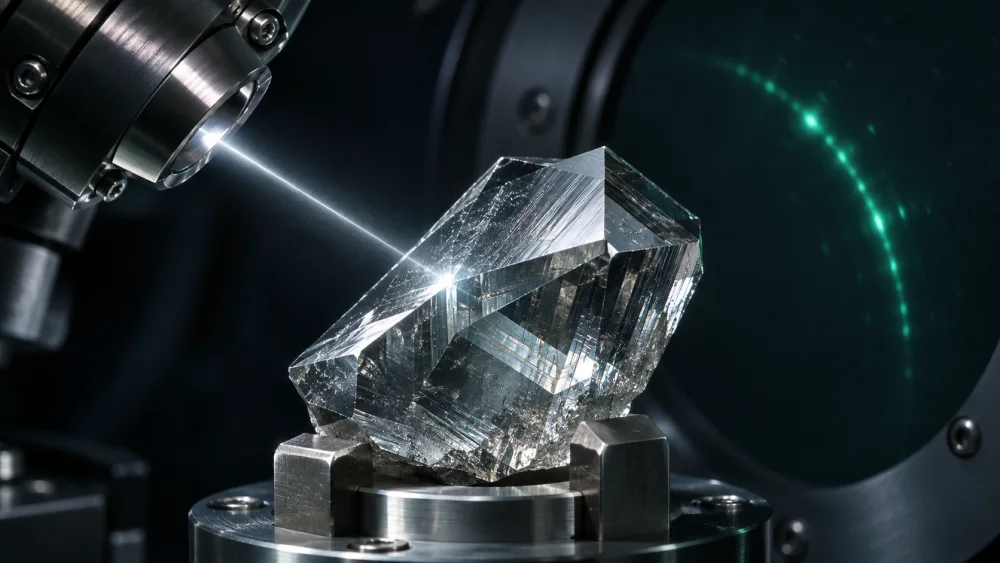
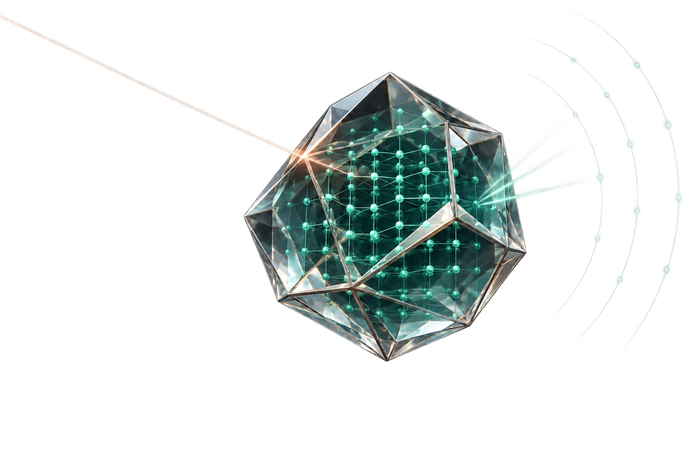

让配方成为证据
识别矿物、定量配比，把古老粉末转化为可核查的组成信息，为文物材料研究提供依据。
面向粉末 X 射线衍射的科学智能体
干将连接物相识别、多相分解与结构精修，让每一步判断都有证据可循。

GanJiang / SCIENTIFIC CHARACTERIZATION从理解结构，走向下一次科学发现。PhyEvo AI / MATERIALS INTELLIGENCE
物演AI 的科学智能理念 · 干将从表征出发
干将是物演AI（PhyEvo AI）科学智能框架中的表征智能体。物演AI 的愿景，是让表征、预测、设计与实验在同一框架中持续学习，连接从理解材料到创造材料的每一步。
每一次实验都成为新的证据，让下一轮预测、设计与决策继续进化。
材料与实验场景为概念视觉
表征 / GanJiang
以 XRD 为起点，把物相识别、多相分解与结构精修连成可审阅的分析过程，为后续性能推演与材料设计提供结构证据。
信号输入 / 物相与结构 / 可追溯证据GanJiang / POWDER DIFFRACTION FILE
面向关键物相判断的自主衍射数据资产
207,146 条参考记录，89 种元素，支持 Cu、Co、Mo、Cr、Fe、Ag 六种靶材。

GJ-PDF-V1 / THE DATA FOUNDATIONGanJiang Agent · 材料智能
用 58 秒了解原子排列如何影响材料，XRD 如何揭示结构，以及干将如何连接分析工具、检验结果并积累经验。
面向高校与科研机构的院系或二级机构
让更多教师、研究人员和学生，在真实的课堂与研究中用上干将。面向高校、科研机构所属的院系或二级机构，提供限期免费使用支持。
为教学与科研，留一份探索空间
具体人数、指定功能及使用额度以审核结果为准，免费支持不等于无限量使用。
GanJiang / GLOBAL COMMUNITY
跨越时区与山海，让对材料的探索彼此连接。
红点为用户位置示意图
拖动旋转 · 双击局部放大 · 点击地球后滚轮缩放 · 方向键旋转，+/− 缩放
古老的眼妆，今天的科学问题
古埃及人留下了化妆粉，也留下了关于材料的谜题：用了什么矿物？如何配比？天然研磨，还是化学合成？
从眼线的色泽与质感，追问一份古老粉末的矿物组成。
让干将读出这份配方从理解古代工艺，到分析今天的材料
THEN / NOW识别矿物、定量配比，把古老粉末转化为可核查的组成信息，为文物材料研究提供依据。
研究者在古埃及化妆粉中发现含氯铅化合物，为古人掌握湿化学合成提供了证据。
多相共存、衍射峰重叠、定量验证，也是现代材料表征的问题。这个案例呈现了干将从复杂信号提取可审阅结论的分析流程。
历史研究参考Walter et al. · Nature (1999)ESRF · Newsletter 32本页五相结果来自干将案例报告。
从一份古老样品，读出五种矿物
一份古埃及化妆粉，一张复杂的衍射图谱。跟随报告中的真实案例，看干将如何分解五相、验证拟合，重建矿物配比。
DeltaXRDbench
从模拟图谱到真实实验，在相同任务与输入条件下，查看干将与各基线的识别表现。
媒体关注
来自媒体与行业的项目报道，记录干将在材料科研场景中的实践与进展。
为什么叫“干将”
“干将”是中国古代铸剑文化中的名字。材料发现同样是一场漫长的淬炼：并非只追求制造更多样品，而是要在复杂的证据中分辨结构、剔除误判，并把每一次验证锻造成下一次更可靠的判断。
干将希望成为研究者与未来机器人实验室之间，那位持续学习、谨慎求证的人工智能分析科学家。
GanJiang ECOSYSTEM / OPEN CALL
欢迎开源与闭源软件共建，也支持学术研究、测试与对比分析。提交研究 proposal，审核通过后可在获批额度内免费调用 GanJiang API。
了解合作与申报GanJiang COMMUNITY
选择你常用的平台，与用户和开发者交流。点击卡片，查看加入方式。
@misc{cao2026selflearningscientificagentxray,
title={A self-learning scientific agent for X-ray diffraction},
author={Bin Cao and Huichi Zhou and Runyu Yang and Jingsong Li and Shuchen Sun and Yan Song and Hanyu Gao and Zhongwei Yu and Tong-Yi Zhang and Jun Wang},
year={2026},
eprint={2610.07862},
archivePrefix={arXiv},
primaryClass={cond-mat.mtrl-sci},
url={https://arxiv.org/abs/2610.07862},
}RESEARCH & INDUSTRY